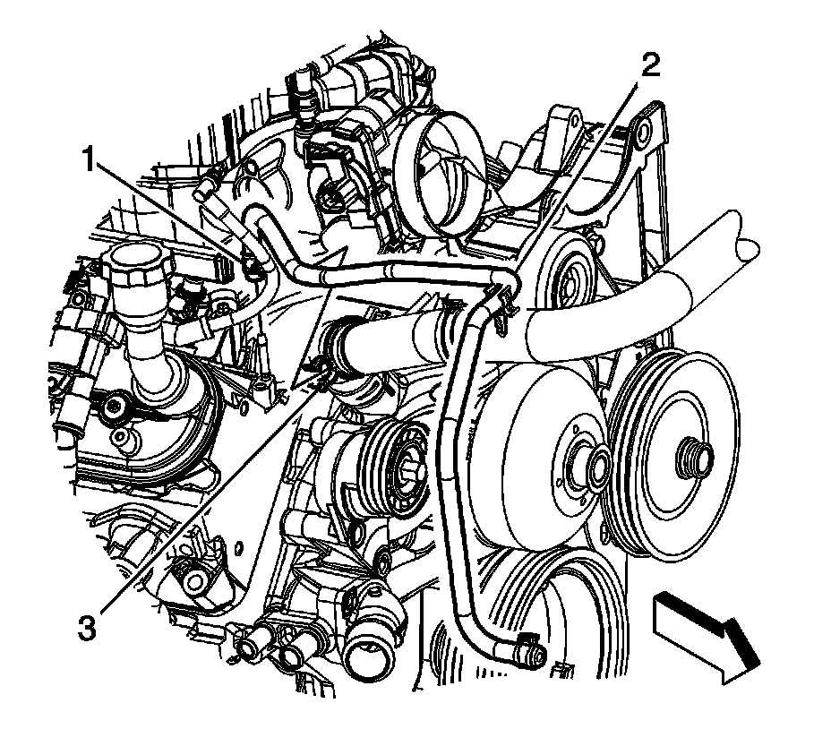
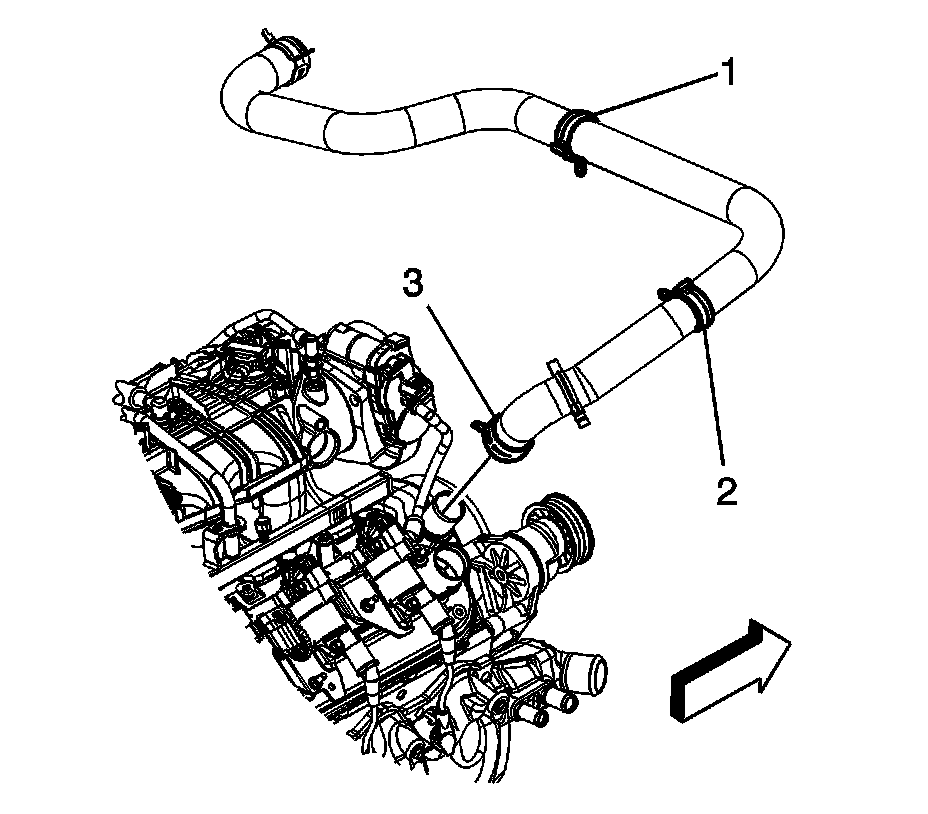
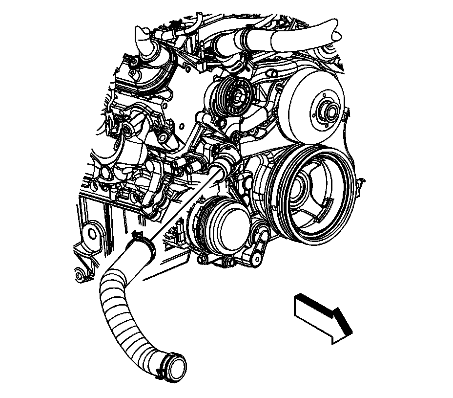
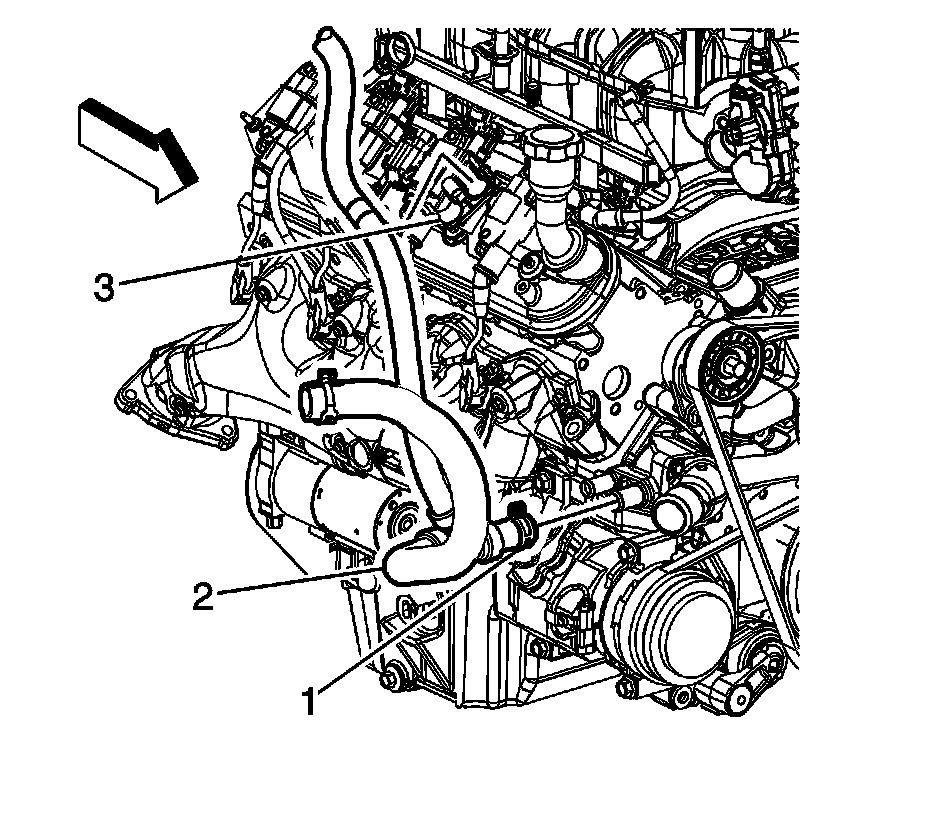
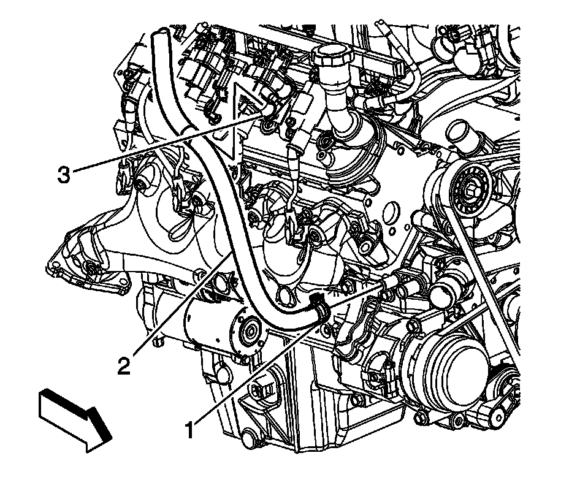
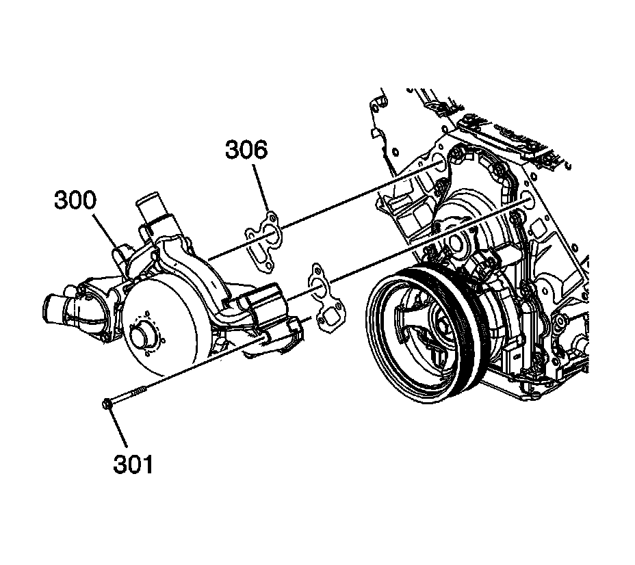

Water Pump: Service and Repair
Water Pump Replacement (RPOs LY6/L76/L92)
Removal Procedure

1. Remove the air cleaner outlet duct.
2. Drain the cooling system. Refer to Draining and Filling Cooling System (Vac-N-Fill).
3. Reposition the radiator vent inlet hose clamp (1) at the coolant air bleed pipe fitting.
4. Remove the radiator vent inlet hose (2) from the coolant air bleed pipe fitting.

5. Reposition the radiator inlet hose clamp (3) at the water pump.
6. Remove the radiator inlet hose from the water pump.
7. Reposition the radiator inlet hose and vent inlet hose out of the way.
8. Remove the accessory drive belt.

9. Reposition the radiator outlet hose clamp at the water pump.
10. Remove the radiator outlet hose from the water pump.
11. Reposition the outlet hose out of the way.

12. Reposition the radiator surge tank outlet hose clamp at the water pump (1).
13. Remove the radiator surge tank outlet hose (2) from the water pump.
14. Reposition the outlet hose out of the way.

15. Reposition the heater inlet hose clamp (1) at the water pump.
16. Remove the heater inlet hose (2) from the water pump.
17. Reposition the inlet hose out of the way.

18. Remove the water pump bolts (301).
19. Remove the water pump (300) and gaskets (309). Discard the gaskets.
Installation Procedure
Notice: DO NOT use cooling system seal tabs, or similar compounds, unless otherwise instructed. The use of cooling system seal tabs, or similar compounds, may restrict coolant flow through the passages of the cooling system or the engine components. Restricted coolant flow may cause engine overheating and/or damage to the cooling system or the engine components/assembly.
Important: All gaskets surfaces are to be free of oil or other foreign material during assembly.
1. Position the water pump (300) and NEW gaskets (306) to the engine block.
2. Install the water pump bolts (301).
1. Tighten the bolts a first pass to 15 N.m (11 lb ft).
2. Tighten the bolts a final pass to 30 N.m (22 lb ft).
3. Position and install the heater inlet hose (2) to the water pump.
4. Position the heater inlet hose clamp (1) at the water pump.
5. Position and install the radiator surge tank outlet hose (2) to the water pump.
6. Position the radiator surge tank outlet hose clamp at the water pump (1).
7. Position and install the radiator outlet hose to the water pump.
8. Position the radiator outlet hose clamp at the water pump.
9. Install the accessory drive belt.
10. Position the radiator inlet hose and vent inlet hose to the correct position.
11. Install the radiator inlet hose to the water pump.
12. Position the radiator inlet hose clamp (3) at the water pump.
13. Install the radiator vent inlet hose (2) to the coolant air bleed pipe fitting.
14. Position the radiator vent inlet hose clamp (1) at the coolant air bleed pipe fitting.
15. Fill the cooling system. Refer to Draining and Filling Cooling System (Vac-N-Fill).
16. Install the air cleaner outlet duct.